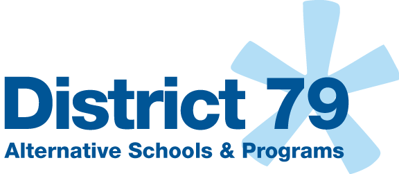
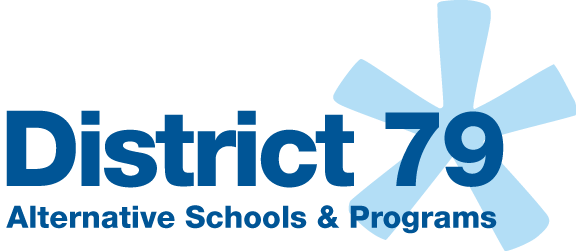

Co-op Tech
For over 30 years, The School of Cooperative Technical Education is a half-day vocational program that offers students hands on training in a variety of in demand and cutting edge trade areas. Coop Tech serves approximately 1,500 students who are 17 to 21 years of age and who represent a wide variety of ethic and cultural backgrounds, disabilities and educational histories. Coop Tech students join us as either shared instruction students who also attend over 130 traditional high schools and Pathways to Graduation programs or as post-graduates who have already obtained a diploma.
Cooperative Learning
Coop Tech offers classes in all five boroughs that provide students with cutting edge trade classes and technology training that meet the growing demands of our nation's workplace. Many students in Coop Tech are given the opportunity to take part in the Department of Education's Work Based Learning Program (WBL) which provides job readiness skills knowledge of basic safety and OSHA procedures, CPR, and real world of work exposure. Upon recommendation from program faculty, each student can be matched with one of Coop Tech's intern partnership sites. Students are encouraged to take full advantage of internship opportunities as they build their portfolios and expand their skills for future employment. Eligible students who participate in paid internships receive minimum wage in addition to real work experience.

 
